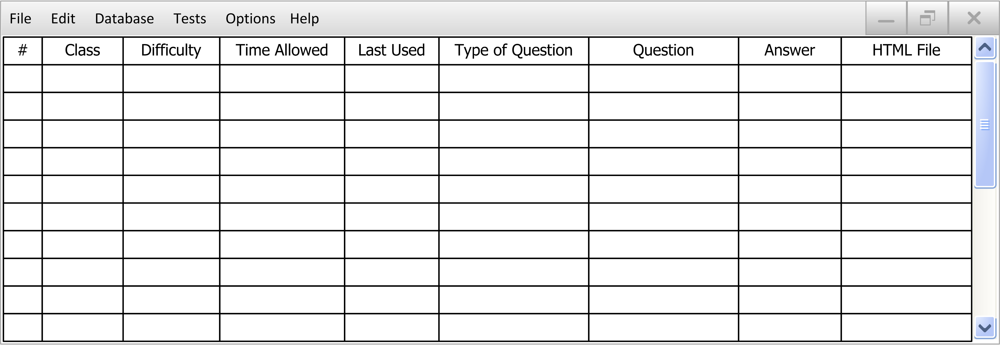
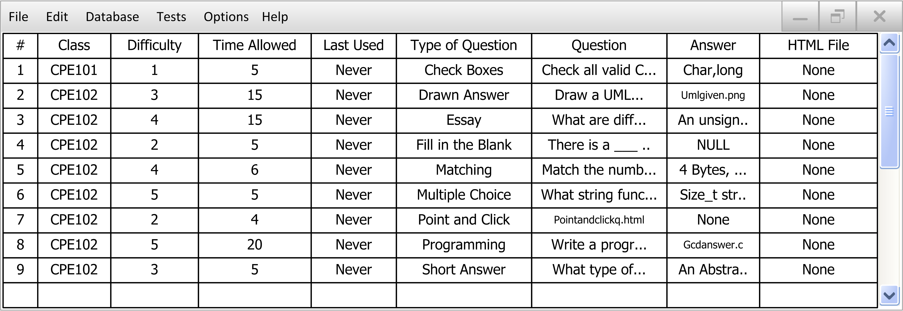

This introductory scenario shows a teacher overviewing the database of questions. This is a common feature for the Test Tool. In the screenshots below, a pre-filled database has been shown to give an idea of what the database would look like after questions have been added. A blank database will simply have no questions in it, and appear to just be a giant blank box underneath the menus.
To view the database, the user selects the Show item in the Database menu, whereupon the system displays the screen shown in Figure 2.2.1.1.

Figure 2.2.1.1: Main Database Screen, Empty
An overview of what is seen, from top down then left to right:
- Standard menu bar
- Class selection tabs: Switch between different questions for seperate classes.
- #: A non-modifiyable number just to make the database readable. One number per question.
- Difficulty: The difficulty of the question, from 1 to 5. A number can be entered in the box, or the up and down arrows can be used to adjust the number.
- Time Allowed: The time allowed for the question in minutes. A number can be entered in the box, with any value. A time of 0 will give the student unlimited time to answer the question.
- Last Used: The last time this question was used in an administered test.
- Type of Question: A drop down menu containing all of the possible question types.
- Question: The text of the question.
- Answer: The answer to the question. Depending on the type of question, this view will change. (For example: Multiple choice will have the answer letter/number, short answer will have the entire short answer.)
- HTML File: The optional attached HTML file to replace the question. This allows for images, videos, etc. to be put into the questions.
Each of the columns can be rearranged via drag and drop to fit the user's liking. Also, clicking on the header of each column (ex. Time Allowed) will switch between sorting the questions in ascending order based on this value, descending order based on this value, or no sorting (returning to default sort, explained next). By default, if no column is being sorted, the database will be ordered by most recently added, with the most recently added question placed at the top of the database.
Figure 2.2.1.2 shows an example of a filled in database.

Figure 2.2.1.2: Main Database Screen Filled In
Figure 2.2.1.3 shows the example database after all add, edit, and delete actions are preformed, as seen in sections 2.2.2, 2.2.3, and 2.2.4 respectively..

Figure 2.2.1.3: Main Database Screen After all Actions